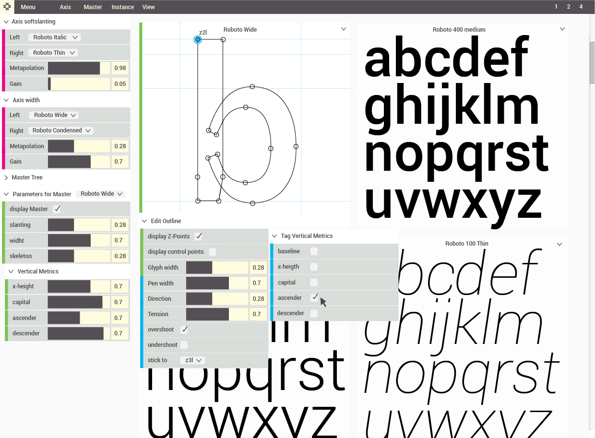
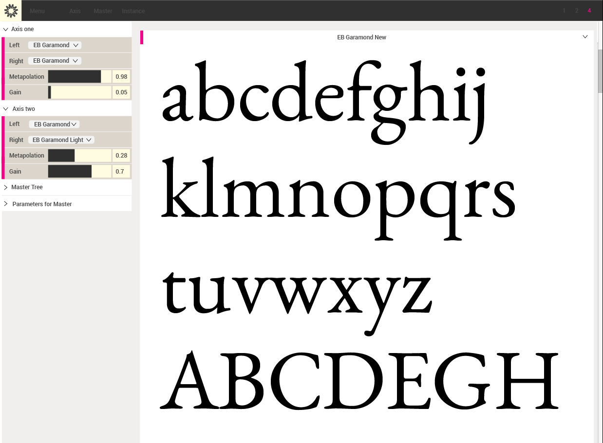
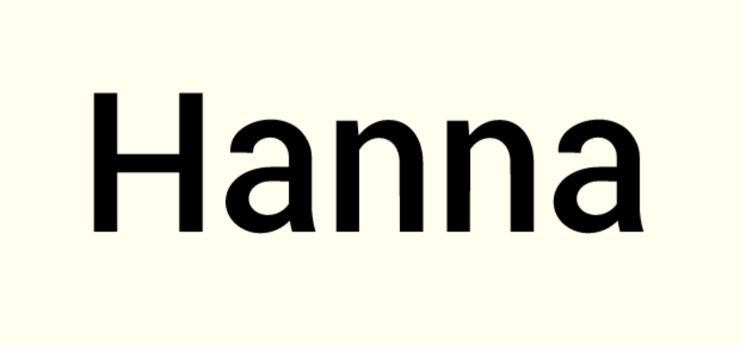

Yes, Metapolator is calculating a skeleton from the glyph outline. From the skeleton to the original outline or to a parametrised version, we can create new inter- and extrapolations.

Metapolator wants to know how and where you want change an outline. For this we have to 'name' a few parts of a glyph. Only if a part is known for the system it can be controlled.
No, its a system to create new styles and font families. The system is designed to work seamless within the working process of type design. The design process can be: Sketching on paper -- creating outlines in font editor -- making new styles in Metapolator -- refine ufo’s in font editor.

No, the term ‘meta’ refers to Donald Knuth’s Metafont, a programming language for digital fonts. Mr. Knuth is one of the founders of contemporary mathematics and computer programming. There is no "magic" going on in Metafont, only pure, clean and perfect calculations.

A core element is the metapolation settings. To compare values with other instances the controller is on the same view as the instances itself. Controllers can be hidden individually or by pressing ‘h’.

Yes, for interpolation using at least 2 masters no extra work is needed. Metapolation from a single master requires tagging consistently using pairs of points.
Use our new command line tool, which does the same interpolation calculation as the interface.

No, metafont functions are controlled by data sliders (dat-gui), You could extend the functionality and write your own metafont functions and contribute to our git repository. This example here shows how to change the font by using a Metafont parameter 'x-height'. Please use the controller to change values.
